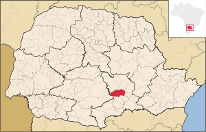

Neste documento estaremos apresentando a cidade Irati - Paraná.
Irati é um município localizado no sudeste estado do Paraná, sul do Brasil.
Faz fronteira com os municípios de: Rio Azul, Rebouças, Imbituva, Prudentópolis, Fernandes Pinheiro e Inácio Martins.

A região foi colonizada, predominantemente, por poloneses e ucranianos. Em partes interiorianas da cidade encontra forte cultura italiana.
População Estimada 2019: 60.727 habitantes
População Urbana Estimada– 44.932 População Rural Estimada – 11.275
Fontes IBGE.
Clima: Segundo a classificação climática de Köppen, o clima de Irati é temperado, apresentando verões amenos, invernos com ocorrências de geadas severas e frequentes, não apresentando estação seca, com uma amplitude térmica média e significativa.
Vegetação: As principais espécies nativas são: Araucária; Imbuia; Erva-mate; Bracatinga; Cedro
Hidrografia: O município de Irati está localizado na Bacia hidrográfica do Rio Paraná, sendo que a rede de drenagem que banha o município divide-se em duas vergências. Entre os cursos d'água, destacam-se o rio dos Patos, Caratuva, das Antas, Preto e Riozinho.
Econômia: Principal atividade econômica o comércio em geral e a prestação de serviços, logo após vem a agropecuária, sendo dividida em bovinos, equinos, galináceos, ovinos, suínos, seguido da agricultura, com o cultivo de soja, tabaco e feijão.